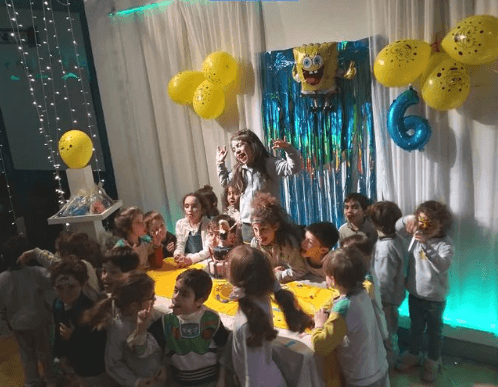
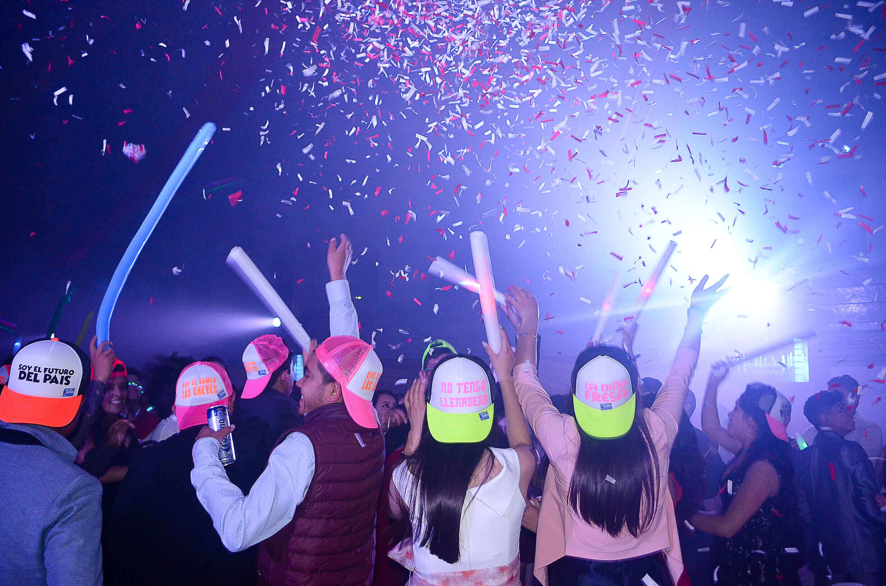

Cada evento infantil es único e irrepetible. Sabemos como hacer que el homenajeado y sus invitados puedan disfrutar de una fiesta inolvidable. Queremos que vuelvas todos los años. Nos gusta que nos recomiendes. Agradecemos que sigan festejando y confiando en nosotros. Estos son los servicios que incluimos: Animación dinámica, fiestas temáticas (consulta tu preferida), visitas de personajes; shows musicales, talleres, futbol, spa de nenas. Estas son las instalaciones con las que contamos: Megalaberinto con pelotero y tirolesa, spa nenas, mini disco, plaza blanda, escenario, piñata, cancha de futbol.
Las necesidades de las nuevas generaciones nos marcan diferentes estilos. Para nuestros pre y adolescentes, Cirilo ofrece una alternativa moderna y diferente, transformando nuestro espacio en una autentica Disco Vip. Humo, burbujas, proyector, pantalla gigante, variedad de sonido y luces para tener una fiesta única!
Nuestro exclusivo salón propone un evento para adultos distinto. Tenemos las alternativas para solucionarte tu festejo para que la pases increíble sin preocupaciones. Olvídate de la comida, de las bebidas y de la animación. Nosotros sabemos como ocuparnos para que vos y tus invitados sean los que disfruten. Nos encargamos de que solo vengas a festejar.A los chicos los pueden traer que tenemos especialistas e infraestructura para que se diviertan mientras los “grandes” disfrutan sin preocuparse.